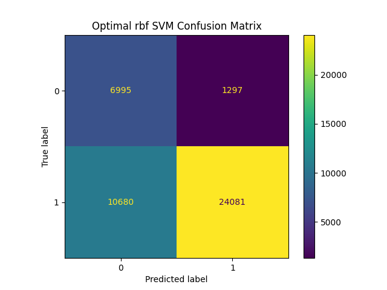
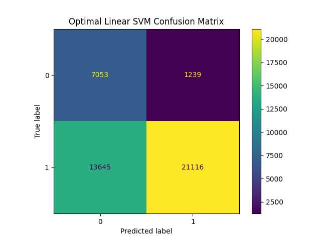
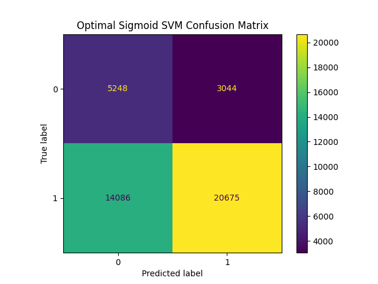

Support Vector Machines (SVMs) are a method of supervised learning wherein the model is trained on labelled data then tested on unseen data to truly understand out well the model holds up. In its simplest form of classification, Support Vector Machines aim to separate data linearly. The model attempts to find support vectors within the data and create a hyperplane in space to divide the data into classes. In 2D data this looks like a line while in higher dimensions it becomes a plane. There are many cases where data is nonlinearly separable immediately, and with SVMs being linear classifiers a problem arises. Is it possible to linearly separate data that upon first inspection is not so? The answer is yes... with the caveat that some mathematical manipulation is necessary. Using the properties of dot products and kernel functions it becomes possible to project the vectors between points into higher space where the data is then able to be linearly separable.
The dot product is a process by which the the projection of one vector on another is used. It is also referred to as a special case of the inner product as the dot product is an inner product in 2 dimensional space. To calculate the dot product, the sum over all products of vectors of a and the products of vectors of b are measured. That is to say a1*b1 + a2*b2 which provides the projected vector for two vectors and gives the weight vector in the svm. For more complex problems this expands to higher dimensions by expanding the multiples of each to extend through every point, i.e. a1*b1 + a2*b2 + ... + aN*bN for N vectors. For more complicated problems, particularly for those that are less linearly separable, there is a kind of trick that one can use to expand the power of the SVM. Said tick is to use a Kernel function for points (a,b) to expand the projection into higher dimensions. The Kernel function is defined as K(a,b) = (aTb +r)^d. In the Kernel function, a and b are the points or vectors while r is the coefficient of the polynomial and the d is degree of the polynomial. Because fo this function, it then becomes possible to not actually project the points, rather use the properties of the function and the lagrangian of each function inside to derive the new weights and biases of each support vector as demonstrated below.
As an extention of the kernel funcition comes rbf kernels, or radial basis function kernels. These are derivative of a Gaussian where the kernel function becomes e^(-gamma(a-b)^2). This is taken from the Gaussian function where gamma is (1/2sigma^2). However, in order to turn this into a dot product for use as a Kernel, a Taylor series is applied leading to a dot product that is represented through infinite space. Lastly, used in this project is the sigmoid kernel. This follows the same kernel function except it is further passed through the sigmoid function in a similar manner that the sigmoid function acts over a linear regression to create logistic models.
To further elaborate on the dot product and the kernel function, an example is provided below.
Assume 2 points in space for a 2nd drgree polynomial with a coefficient of one, i.e. r = 1 and d = 2.
For sake of this example let a be 3 and b be 4:
K(a,b) = (aTb +r)^d
K(a,b) = (aTb + 1)^2
K(a,b) = (ab + 1)^2
K(a,b) = (ab)^2 + 2ab + 1
We can then cast this into the second dimension by expanding and creating the dot product which is simplified to:
[a^2, sqrt(a), 1] dot [b^2, sqrt(b), 1]
This means the casting of a into higher dimension space becomes [a^2, a*sqrt(2), 1]
and the casting of b into higher dimension space becomes [b^2, b*sqrt(2), 1]
And the dot product in the new transformed space is:
K(a,b) = (3*4)^2 + 2*3*4 + 1
K(a,b) = 12^2 + 24 + 1
K(a,b) = 144 + 25
K(a,b) = 169
To feed effective data into the SVM model through sk-learn, numeric data is required. This does not mean that categorical and binary features cannot be used, rather there is a caveat to said features. Binary features do not really add to many issues as there representation is a 0 or a 1, similar to a dummy variable, where the feature simply is the presence of the column. For this model, the sex column falls into this category. However, other categorical features can bring some issues if they are too complicated. Using categories means that they must be encoded (meaning an integer represents a category) when passed into the model for training which is where issues can arise. This can overcomplicate the model by adding excessive dimensionality if one hot encoding is used or it can add weight to categories encoded with higher values representing them. This effectively means that a feature that may not be ordinal or have inherit weight will be treated as so, adding problems. To mitigate this, only one categorical feature was used, highest education received. Furthermore, this categorical feature was reduced to 5 categories rather than the original 17. Additionally, this feature does exhibit ordinal nature as higher levels of education do lead to lower levels of impoverishment.
Moving to cleaning, the original data uses the Census Bureau data pulled from the Census API as explained in the EDA tab. There are a total of 38 features and roughly 150,000 rows. Only numerical features were used alongside two binary (sex and employment) and one categorical (highest education) that was engineerd as previoulsy described. Ultimately this left 9 features to be tested on one target variable. The target variable also tests whether somebody is below 150% the poverty threshold or above, i.e. if someone is impoverished or in danger of and those who are not.
From here, the data was selected to only include rows that had complete data. Standardization was then applied using standard scaler to reduce computation needs and bring all of the data closer together as there was a difference in data size by orders of magnitude. The data was then split into a 70/30 train test split to ensure model accuracy and efficacy on unseen data. Lastly, the data was randomly undersampled to ensure balance in the data and not casue the model to be more effective at classifying the more represented target variable in the dataset, those not impoverished. The final cleaned dataset is shown below.
| age | job_industry_recode | school_enroll_lastweek | employment | fam_size | ... | fam_otc_med_costs | fam_rent_val | fips | state | state.1 | |
|---|---|---|---|---|---|---|---|---|---|---|---|
| 1 | 67 | Not in universe, or children | Not in univ. or children & Armed Forces | 0 | 0 | ... | 0 | 0 | ME | 4 | 23 |
| 2 | 74 | Not in universe, or children | Not in univ. or children & Armed Forces | 0 | 0 | ... | 60 | 0 | ME | 4 | 23 |
| 3 | 66 | Not in universe, or children | Not in univ. or children & Armed Forces | 0 | 1 | ... | 0 | 0 | ME | 3 | 23 |
| 4 | 68 | Not in universe, or children | Not in univ. or children & Armed Forces | 0 | 1 | ... | 0 | 0 | ME | 3 | 23 |
| 5 | 52 | Not in universe, or children | No | 0 | 1 | ... | 0 | 0 | ME | 3 | 23 |
5 rows × 38 columns
| federal_gross_income_adj | fam_size | age | fam_med_costs | weeks_unemployed | hours_worked | highest_education | sex | employment | |
|---|---|---|---|---|---|---|---|---|---|
| 0 | -0.432729 | -1.968061 | 1.163031 | -0.480885 | -0.020846 | -0.842463 | 0.096883 | 0.973591 | -0.957664 |
| 1 | -0.265626 | 0.288997 | 1.333949 | -0.480885 | -0.020846 | -0.842463 | 1.387408 | -1.027126 | -0.957664 |
| 2 | -0.432729 | 0.288997 | -0.247044 | 0.319375 | -0.020846 | 1.067770 | 1.387408 | -1.027126 | 1.044207 |
| 3 | -0.432729 | 0.288997 | -0.460691 | -0.355844 | -0.020846 | -0.842463 | 1.387408 | 0.973591 | -0.957664 |
| 4 | -0.432729 | -1.968061 | 0.693006 | -0.480885 | -0.020846 | -0.842463 | -1.193642 | 0.973591 | -0.957664 |
The following models are built through scikit learns adaptation of Support Vector Machines. Three separate Kernels are tested with varying regularization parameters, C. First is a classic linear SVM, then one using the rbf kernel as explained above, and finally a sigmoid kernel. For the regularization parameter, C, values of 1, 0.2 and 0.7 and are associated with models a, b , and c of each kernel type respectively. Accuracies of all versions of each kernel are shown below followed by the confusion matrices of the best version of each model.
| Model | accuracy_score | precision_score | recall_score | f1_score | |
|---|---|---|---|---|---|
| 0 | linearSVM_a | 0.654287 | 0.944576 | 0.607462 | 0.739408 |
| 1 | LinearSVM_b | 0.654031 | 0.944032 | 0.607520 | 0.739283 |
| 2 | LinearSVM_c | 0.653892 | 0.944653 | 0.606887 | 0.739005 |
| 3 | rbfSVM_a | 0.721808 | 0.948893 | 0.692759 | 0.800845 |
| 4 | rbfSVM_b | 0.700880 | 0.945265 | 0.668220 | 0.782957 |
| 5 | rbfSVM_c | 0.716652 | 0.948370 | 0.686430 | 0.796415 |
| 6 | sigmoidSVM_a | 0.591271 | 0.861713 | 0.588159 | 0.699130 |
| 7 | sigmoidSVM_b | 0.602118 | 0.871664 | 0.594776 | 0.707079 |
| 8 | sigmoidSVM_c | 0.591968 | 0.862651 | 0.588303 | 0.699540 |
As seen by the above accuracy report, the optimal linear SVM kernal was linearSVM_a which represented a regularization parameter of 1, the best of the rbf kernels was a as well and the best of the sigmoid was b with a C value of 0.7. Between the three of these, the rbf kernel outpeforms each of the other two models with an accuracy score of 72%. The next best was the linear kernal with and accuracy score of 65% followed by the sigmoid kernel with an accuracy of 60%. Each of the models' confusion matrices are shown below. Through each of the models it becomes evident that the ability of the models comes from their ability to correctly classify the impoverished class. Said class is underrepresented in the data and is what exactly the goal of this model is. While it would be possible to increase the accuracy of each of the models by not undersampling, it would artificially do so and would likely make prediction of the impoverished class worse. Between each of these three models, this is where the sigmoid kernel fails most. Surprisingly, the linear and the rbf kernel perform similarly well in this at correct classification, however the linear kernel shows many more false positives.
  From these, however, it then becomes further possible to explain the relationships within the data itself and learn more about feature interaction. This extends from the accuracy of the models and how well they work. As seen by the accuracy of the rbf model, it can be assumed that the relationship of the data is more gaussian in nature. This means that it is necessary to work with models that accomodate normal data with measurable variation outside of the standard noise. Furhtermore, it suggests that the data in the set is more normal than previously assumed and can allow for future feature engineering that takes this into account. Lastly, it suggests the importance of standardizing the datasets. Using these models in this project help to not only classify the data into their correct classes with decent accuracy and but provide insight into future cleaning.